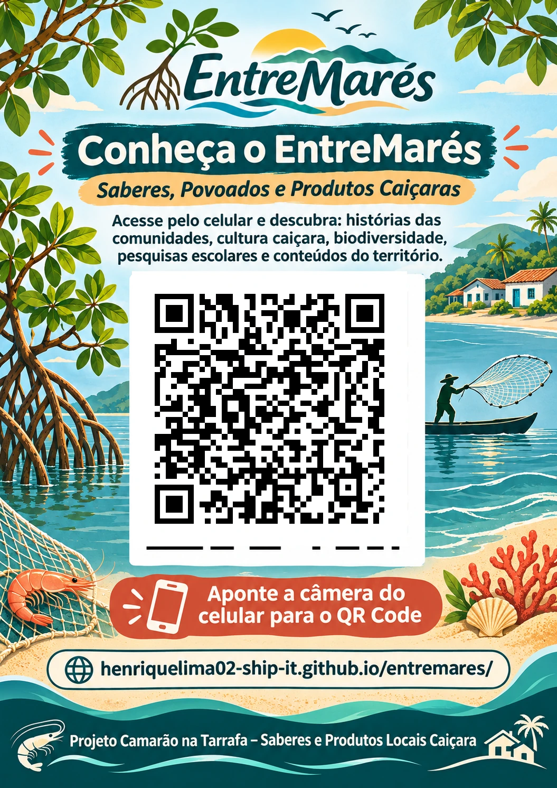

Apresentação especial · Educação e comunidade
Conhecer o site
IFA e o site EntreMarés
Uma apresentação sobre o Itinerário Formativo de Aprofundamento e sobre como as pesquisas escolares se transformam em saberes compartilhados com Piaçaguera, Amparo e outras comunidades da Baía de Paranaguá.
1 / 7
Use as setas do teclado ou os botões para avançar. No celular, deslize a apresentação para os lados. A opção “Tela cheia” é indicada para projetores e reuniões.
O IFA e o EntreMarés
O projeto conecta pesquisa escolar, saberes tradicionais, pesca artesanal, tecnologia e participação da comunidade.
Depois dos slides, explore as páginas reais do EntreMarés.
Os slides usam ilustrações didáticas; os links abaixo abrem conteúdos reais do portal, para mostrar durante a apresentação.
Material para a comunidade
Convide os moradores a conhecer o site.
O cartaz foi preparado com QR Code verificado para compartilhar o endereço do portal em escolas, reuniões e espaços comunitários.
Abrir ou salvar o cartaz com QR Code
